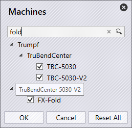

Use Edit command to launch Machine picker dialog. It displays a hierarchical list of all Cutting, Bending machines along with the current selections. Panel bending machines are listed under Trumpf • TruBendCenter node.

● In the hierarchical tree-view, simplified machine name is displayed as machine label and full name is displayed in the tooltip. The folder tooltip displays the node path (Ex: Trumpf • C Series • C60)
● Brand specific icon is displayed for non-Trumpf press-brakes. The machine tooltip also displays the machine brand (Ex – Brand: Bystronic).
● Search box can be used to search machines by Name, Full-name, Brand etc. Machine selection is retained during the search so you can pick-and-search at the same time.
● Search can also be used to search by machine technology, size. So, typing fold in the search box shows all folding (panel bender) machines. Similarly, typing 10ft displays all press brakes with 10ft table length (this is unit sensitive. Use m for meter in metric unit). Where available in the name, the axes count can also be used for searching (Ex: 2A, 5A etc.)
● Reset All command resets the machine selection to the demo configuration.